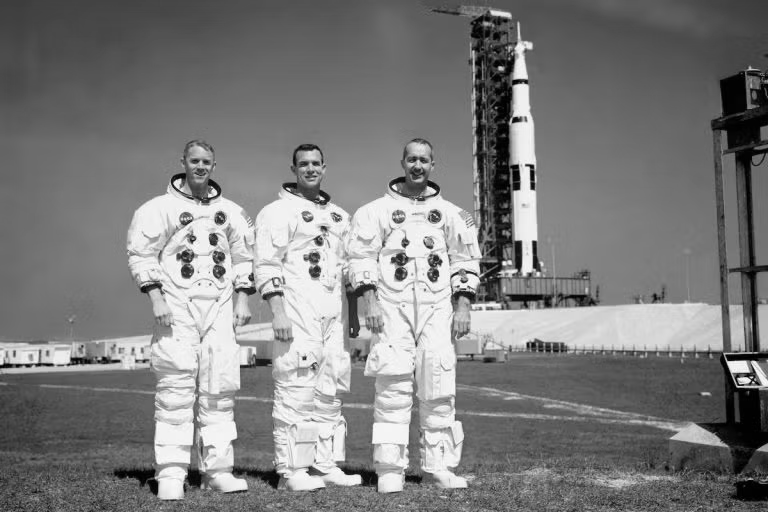

Tomorrow morning, the Motherland Space Command will launch the first manned rocket to the moon from the Tyker Cosmodrome to demonstrate the nation’s absolute technological supremacy.
The launch marks the culmination of a decade-long scientific initiative ordered by the President. Three highly decorated astronauts, designated ARO5, SOL3, and ELD9, will pilot the landing craft. Upon touching down on the lunar surface, ELD9 will plant the red-and-black flag of the Motherland and conduct the first human moonwalk.

For weeks, opposing nations have broadcasted desperate propaganda claiming such a flight is impossible. State officials confirm these claims are merely the fabrications of a dying resistance. Security forces have pre-emptively secured all communication lines to ensure uninterrupted viewing of the historic event.
The President commands all citizens to gather at their community televisions tomorrow at zero-six-thirty hours. Mandatory attendance will be monitored by local wardens.
★ MANDATORY VIEWING ORDER ★
ALL CITIZENS MUST REPORT TO COMMUNITY TELEVISIONS AT 06:30 HOURS
ATTENDANCE WILL BE MONITORED BY LOCAL WARDENS